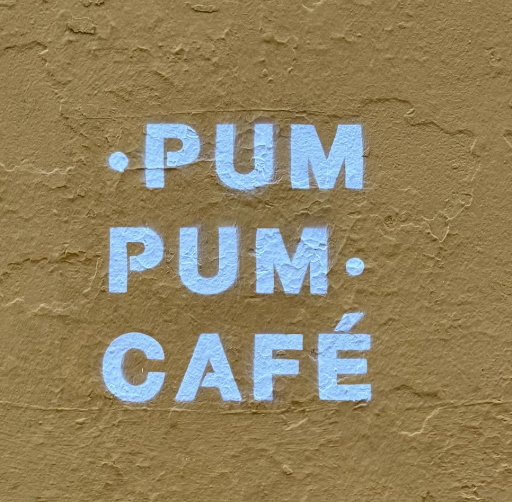
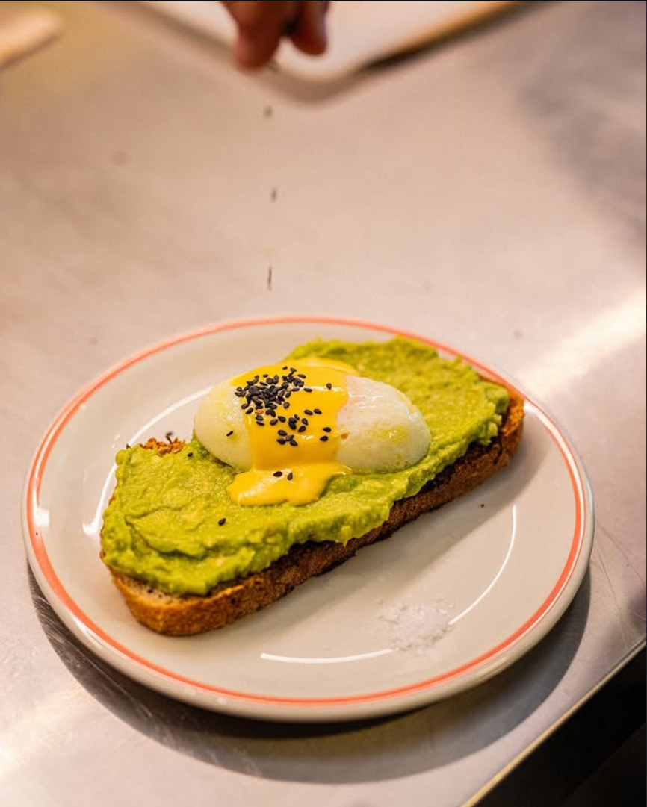
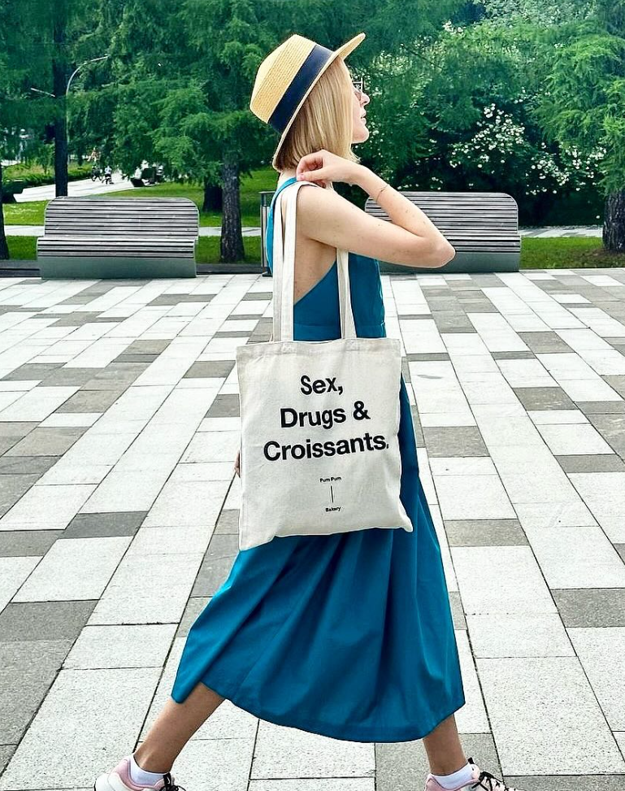
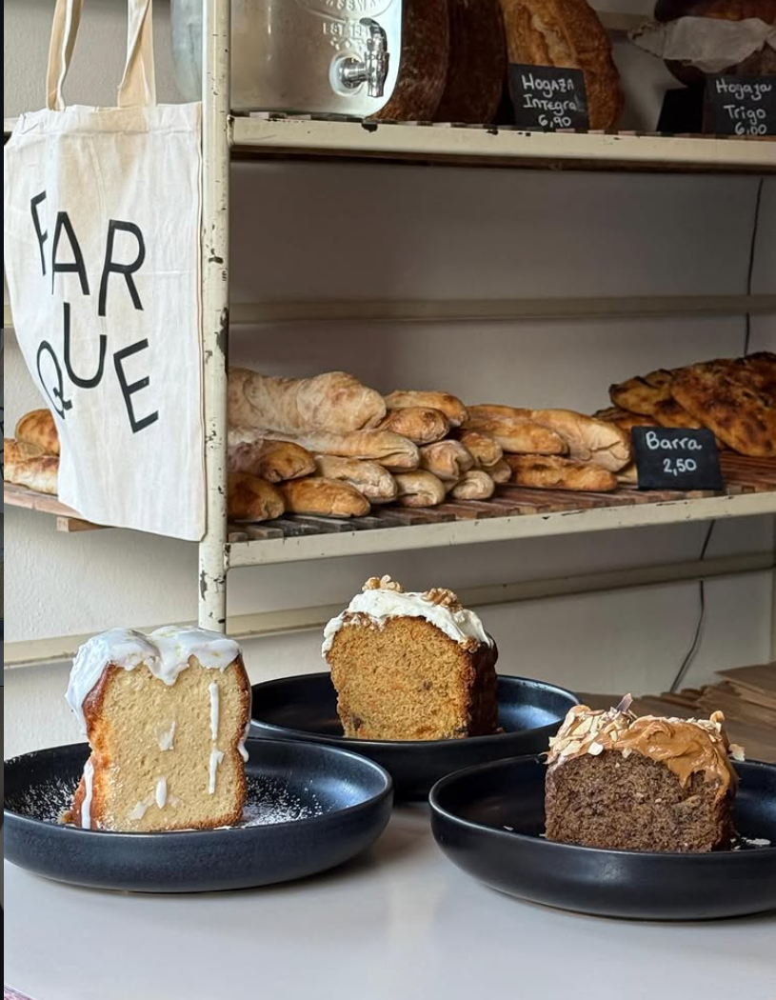
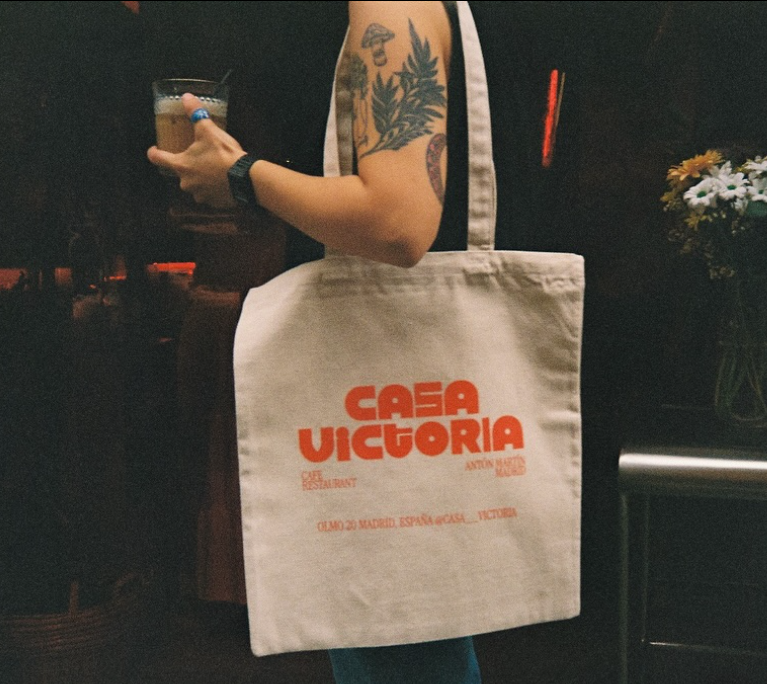
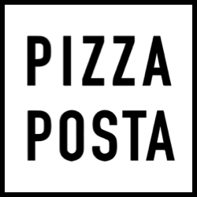

Seis espacios con alma propia: el café original en Lavapiés, un obrador, una pizzería de barrio, brunch editorial en Chamberí, brunch luminoso en Chamartín, y una casa de día y noche con música. Esto es Pum Pum.
Six spaces with their own soul: the original café in Lavapiés, a bakery, a neighbourhood pizzeria, editorial brunch in Chamberí, bright brunch uptown, and a day-and-night house with music. This is Pum Pum.

La casa madre. Café de especialidad, brunch todo el día, la pared amarilla que todos fotografían. Premio LITO.
The mother house. Specialty coffee, all-day brunch, that yellow wall everyone photographs. LITO Prize winner.
Visitar → Visit →
Hermana pequeña con carácter propio. Brunch editorial, flat whites impecables, walk-ins only.
The little sister with her own character. Editorial brunch, impeccable flat whites, walk-ins only.
Visitar → Visit →
Nuestro obrador. Cruasanes de pistacho, cinnamon rolls, focaccia, todo hecho a mano cada mañana.
Our bakery. Pistachio croissants, cinnamon rolls, focaccia, all handmade every morning.
Visitar → Visit →
Brunch luminoso en Chamartín. Obrador orgánico, café de especialidad, comida reconfortante.
Bright brunch uptown. Organic bakery, specialty coffee, comfort food.
Visitar → Visit →
De día café y sabor. De noche, DJ y cena con reserva. Vinilos, naranjas y una vibra de los 70.
Café by day, DJs and dinner by night. Vinyl, orange velvet, '70s atmosphere.
Visitar → Visit →
Pizzería de barrio con vinos y candlelight. Cocina abierta hasta medianoche, de miércoles a domingo.
Neighbourhood pizzeria with wine and candlelight. Open late, Wed—Sun.
Visitar → Visit →"Seis casas, una sola forma de entender la hospitalidad."
"Six houses, one single way of understanding hospitality."
Pum Pum · Madrid